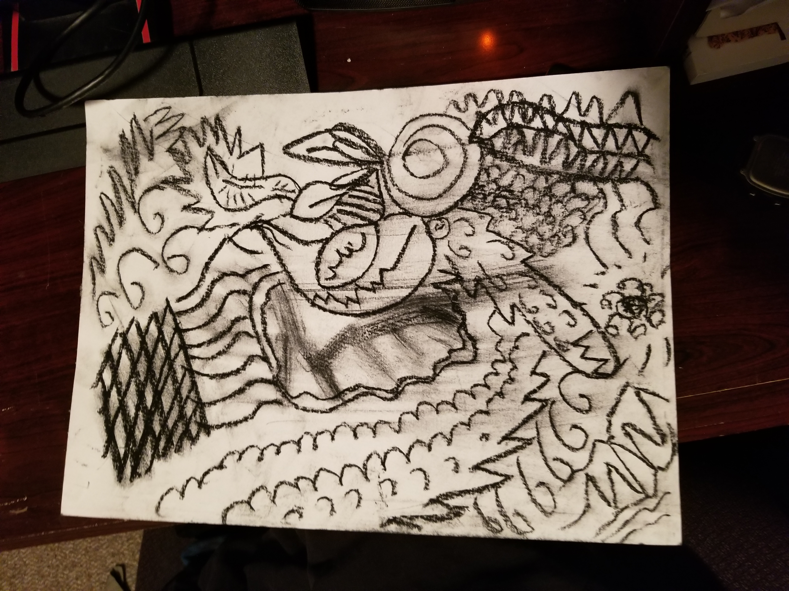

When I first moved to Missoula, I lived in an apartment complex off Expressway. The outside and inside were painted white, the lawn was always mowed, the trees were always trimmed, there was even a little fake pond in the middle surrounded by rocks with a fountain that seemed to never turn off; all of it made me sick. Three hundred or so people must have lived there, all stacked on top of eachother in the same white rooms with the same white walls. She had black hair and a shag orange couch. She wore a tattered pair of original chucks and a smile you couldnt forget. My roommate had known her for a long time and had invited her over to hangout and try and set us up. She thought she was coming to a party. She was disappointed when there wasn't a party. She was disappointed when she stood at the door in the cold waiting for someone to let her in. She was even more disappointed when she finally got inside (with the help of my roommate who had just got home) and found me napping on the couch, oblivious to her insistent doorbell rings. I cooked a steak for her. It was overdone and bland. She liked my roommates better. There were only four of us: my two roommates who were dating, me and her. We moved onto card games and drank Barefoot Pink Moscato out of these brown stained glass cups from the 70’s. I lost and as a result drank way more than I should’ve for a person trying to court a love interest but, at least it gave me the confidence to start a conversation with her. We talked about our hometown where we went to the same school and didn’t even know each other. We discussed books and hallucinogens. I convinced her to read Fear and Loathing in Las Vegas and handed her my copy. I didn’t even care if she read it. It was all a ploy to get her to talk to me again. I moved out 6 months later. Living off Reserve doesn't even feel like living in Missoula. It's an urban hellscape of frivolous businesses and a never ending stream of traffic. It had no soul. The energy was vapid and I wanted to be closer to the heart of the town. When I moved the second time in Missoula, I lived in an adorable little brick house off Higgens. I was next to the river, a five minute walk to downtown, and I lived by myself. There were 5 other little brick homes next to mine and we all shared a yard. My porch was gray and decaying, the kitchen cabinet was a dull yellow, my bathtub/shower had feet. I loved it all. She had bleach blonde hair and a shag orange couch. She wore black docs that were falling apart at the soles and a smile you couldnt forget. I say I lived by myself but that was hardly the truth. Almost every night she slept over and we would laugh harder than imaginable all night long. For months we were close to inseparable, only spending time apart when she was in class or I was at work. Her grades started to slip and my attention at work had started to drift. It was an overcast day with rain expected to fall at any second. I stood across from her with a soccer ball under my right foot, while she was stanced low to the earth and her feet wide apart. I tried to fake to the right and dribble to the left but she clearly saw that and planted her foot directly into the ball, resulting in me tripping over her ankle and falling face first in the sod as she let out a laugh while stealing the ball away. I frantically tried to get back up but before I knew it she had kicked it next to the single fence post in the yard, the closest thing we had as an indicator for a goal. We reset and she started with the ball again and this time I wasnt going to let her win by any means necessary, so when she got close I immediately tackled her to the ground without any mercy. Her retaliation was quick, immediately jumping on my back and wrestling me down. Eventually she had my wrists pinned and was sitting on top of me as I laid on my back. She looked down at me and kissed me on the lips as the first rain drops started to fall. I moved out 4 months later. My house and all the ones next to mine were bought out by a contractor from Seattle. They were demolished a month later. Now condos are being built there that I know I could never afford. When I moved the third time in Missoula, I lived in a shit-hole of a house. The walls were painted baby pink, baby blue, and baby yellow. The drywall was crumbling and the floorboards were scratched to all hell. Someone had left a message in one of our cupboards, written on the wood in sharpie, that read “Till the DEATH, Dinosaurs!!”, a quote that still puzzles me to this day. She had black hair with one half of her bangs dyed blue and a shag orange couch. She wore brand new bright yellow boots and a smile you couldnt forget. Up until this point in my life I had vowed to never go back to college and had worked at a dead end job for the past three years. That all changed when she was a sophomore and suggested I should change my mind. I quit my job and reapplied for university the same night, two weeks away from the start of classes. She asked me if I had any idea what classes I wanted to take. I had no clue. I just knew I would be fine with her by my side. It was her 21st birthday and her friends and I wanted to make it special. We made her a video with all her friends and family sending little clips to congratulate her on her big day. We had 10 friends over and I came up with an olympics style game with 3 teams competing for the title of simply being the best. The competitions included things that she loved, obviously she came in first in Mario Kart Wii. I can't remember another night where she smiled or laughed harder. I moved out a year later. The house was put on the market a month after we moved in and resulted in 7 months of inspections and showings. It was later sold for $570,000. They kicked us out and stole a third of my deposit for “vent cleaning”. I spent the next three months living with her in her tiny tiny apartment. When I moved the fourth time in Missoula, I lived, and still reside, in a blue house next to the hip strip. My room is the most poorly made extension ever and for some reason the walls are painted with the same popcorn texture as the ceiling. Our yard is always dead or full of weeds and the construction around us never stops. I have three roommates with three cats. It’s madness all the time. She has her natural brown hair and a shag orange couch. She wears off brand chacos and a smile you couldnt forget. I am entering my seventh semester of classes and she is one away from graduating. I never thought I would make it this far, and I can contribute it all to her. She has helped and supported me every step of the way and all I can hope is that I’ve done at least a fraction of the same for her. Her future terrifies her, but I am just so excited to see her take this world by storm. There's not enough words in the dictionary to describe how amazing she is. The day was just like any other, mostly consumed by studying and coffee. She sat on my bed with her laptop in front of her and multi-colored flash cards spread everywhere. I worked at my desk with light lofi beats playing on my computer. Afterwards we ordered pizza and bought five (yes five) different chocolate bars from the gas station. We laid in my bed and watched Whiplash, cringing horrendously under the covers at the intense nature of the film. This day was yesterday. This day was perfect. Because of her.
